Neugier darf wachsen
Die Kinder fragen, probieren aus und finden ihren eigenen Weg – begleitet, aber nie klein gemacht.
Eine neue Zeichentrickwelt · 4–7 Jahre
Leni, Bo und Sami wollen entdecken, bauen und gemeinsam etwas schaffen. Und Motte? Die weiß meistens mehr, als sie zugibt.
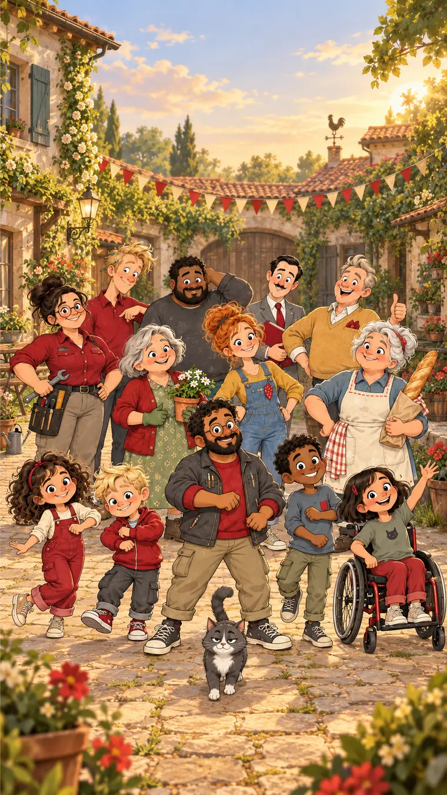
Gemeinsam
ist mehr los.
Willkommen im Tummelhof
Mitten in einem deutschen Kleinstadtviertel liegt ein Hof, in dem Nachbarn zu Freunden werden. Hier geht es nicht um die größte Sensation – sondern um die kleinen Dinge, die sich für Kinder riesengroß anfühlen.
Die Kinder fragen, probieren aus und finden ihren eigenen Weg – begleitet, aber nie klein gemacht.
Freundschaft bedeutet nicht, immer einer Meinung zu sein. Im Tummelhof finden alle einen Platz.
Verständliche Lösungen, glaubwürdige Abläufe und Geschichten, die Kinder mit einem guten Gefühl verlassen.
Die Figuren
Jede Figur sieht die Welt ein bisschen anders. Genau deshalb funktionieren ihre Ideen am Ende gemeinsam am besten.
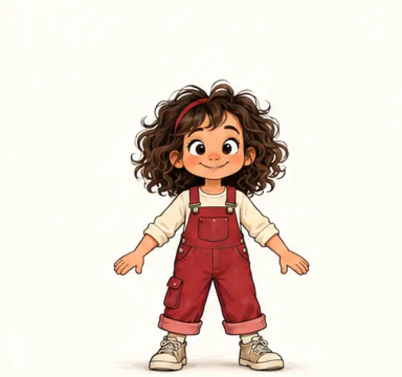
Erfindet Spiele und hat sofort einen Plan. Manchmal sogar, bevor alle anderen mitplanen konnten.
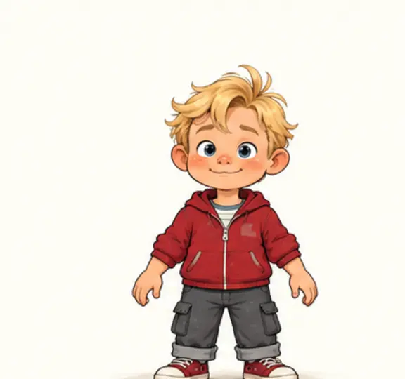
Fragt direkt und entdeckt den kleinen Widerspruch, an dem alle Großen vorbeigesehen haben.
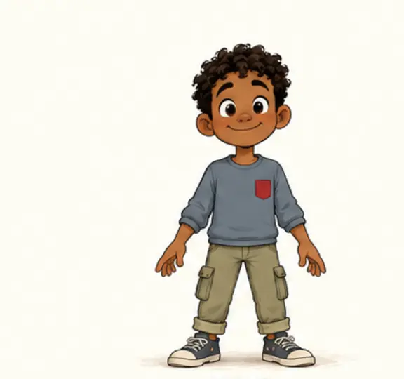
Macht aus einem kleinen Vorhaben eine große Expedition – und nimmt seine Freunde einfach mit.
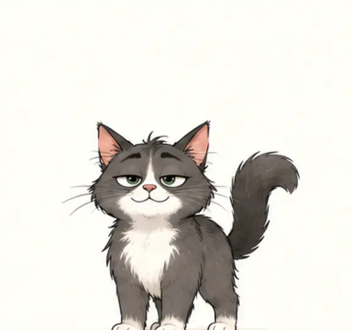
Spricht kein Wort und hat trotzdem oft die beste Pointe. Ein einfacher Korb schlägt jedes Luxus-Katzenhaus.
Familie & Nachbarschaft
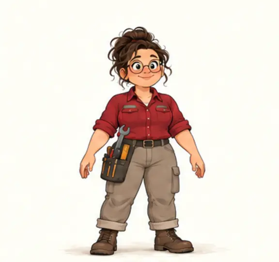
Lenis und Bos Mutter. Praktisch, geduldig und immer bereit anzupacken.
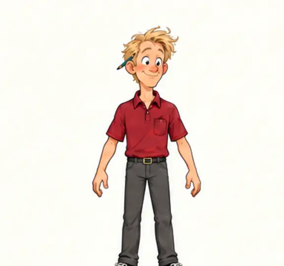
Der optimistische Vater. Den Stift sucht er gern, obwohl er hinter seinem Ohr steckt.
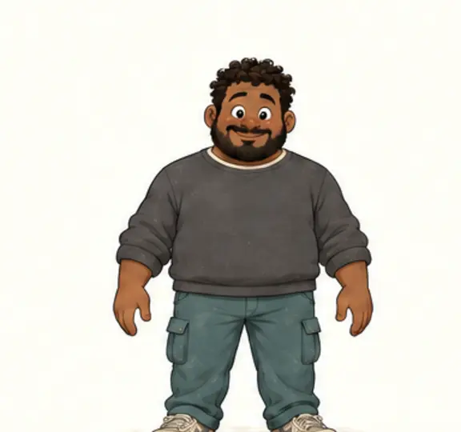
Samis Vater, Busfahrer und guter Koch. Ruhig, zuverlässig – und Freund klarer Listen.
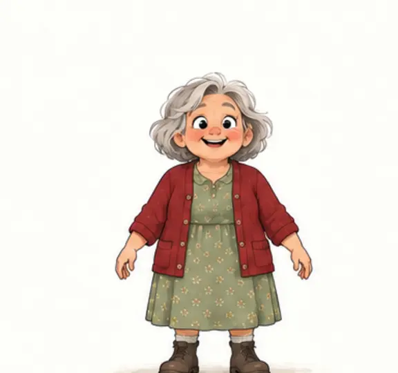
Erfahren, neugierig und immer für eine überraschende Idee zu haben.
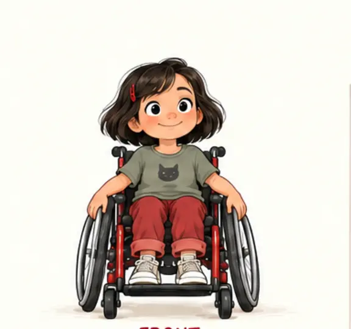
Mag Rätsel und Theater. Wenn gespielt wird, übernimmt sie gern die Regie.
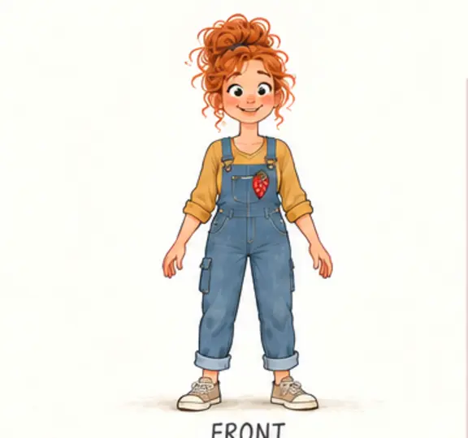
Bos Kita-Erzieherin. Sie begleitet das Ausprobieren – manchmal mit Fingerpuppen.
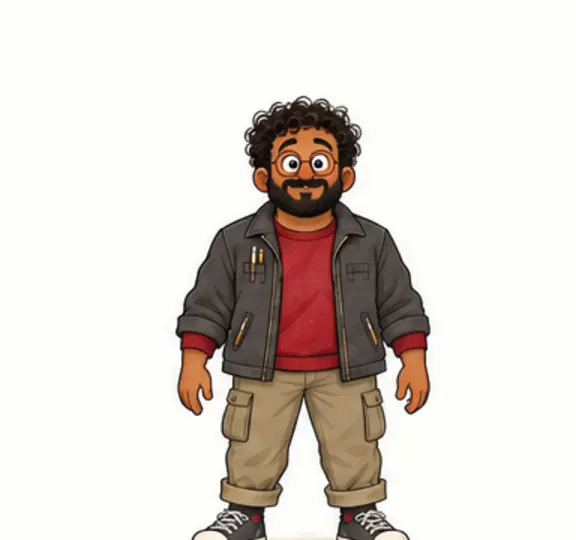
Lenis Lehrer. Erklärt verständlich; nur seine Zeichnungen brauchen ab und zu Hilfe.
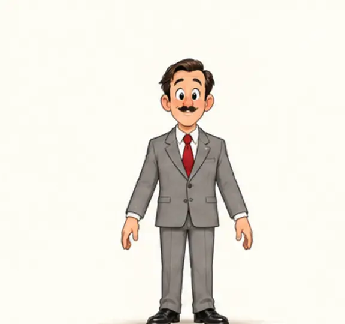
Übergenau und hilfsbereit. Seine Formulare passen nur nicht immer zum echten Leben.
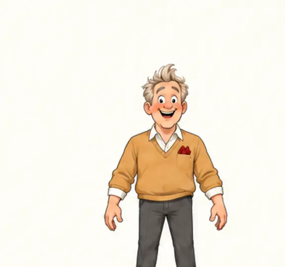
Präsentiert mit großer Begeisterung – notfalls auch nur ein winziges Spielzeugauto.
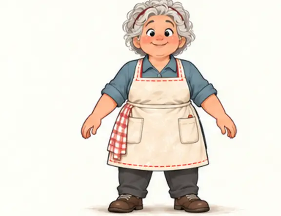
Die Bäckerin kennt alle. Ihre Ideen sind großzügig, ihre Baguettes besonders lang.
Für kleine Zuschauer und große Mitgucker
Vertraute Alltagssituationen, kleine Konflikte und verständliche Lösungen. Jede Geschichte bekommt ein richtiges Ende – und lässt trotzdem Platz für die nächste eigene Idee.